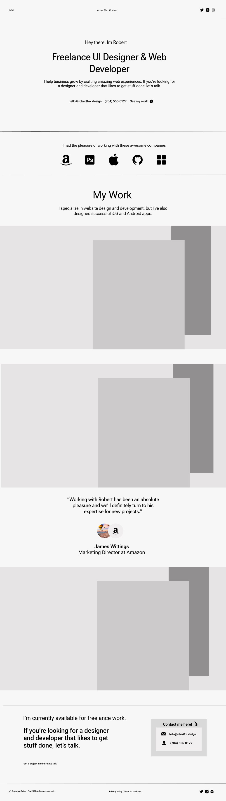
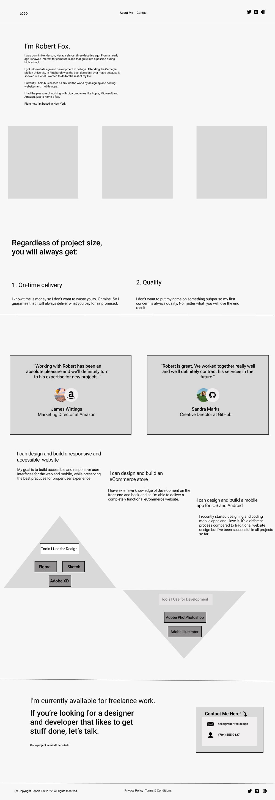
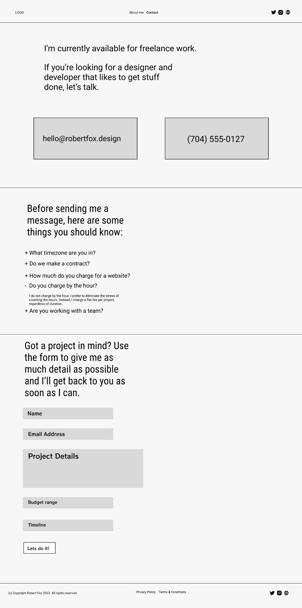
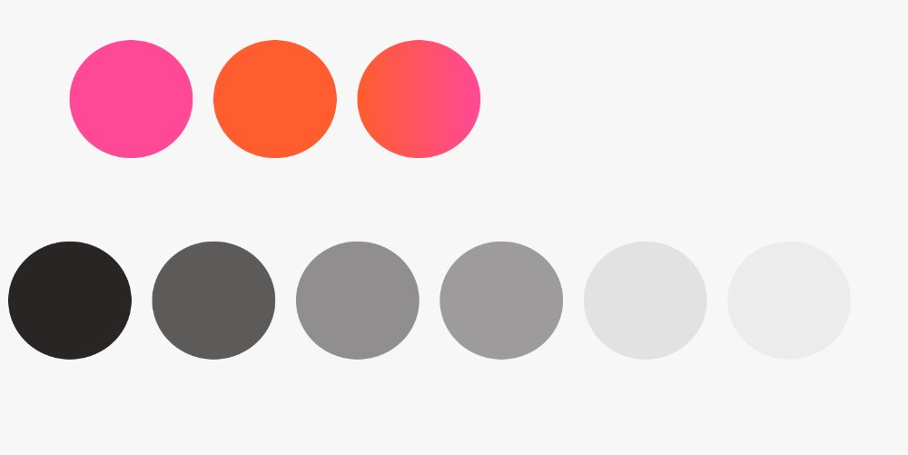
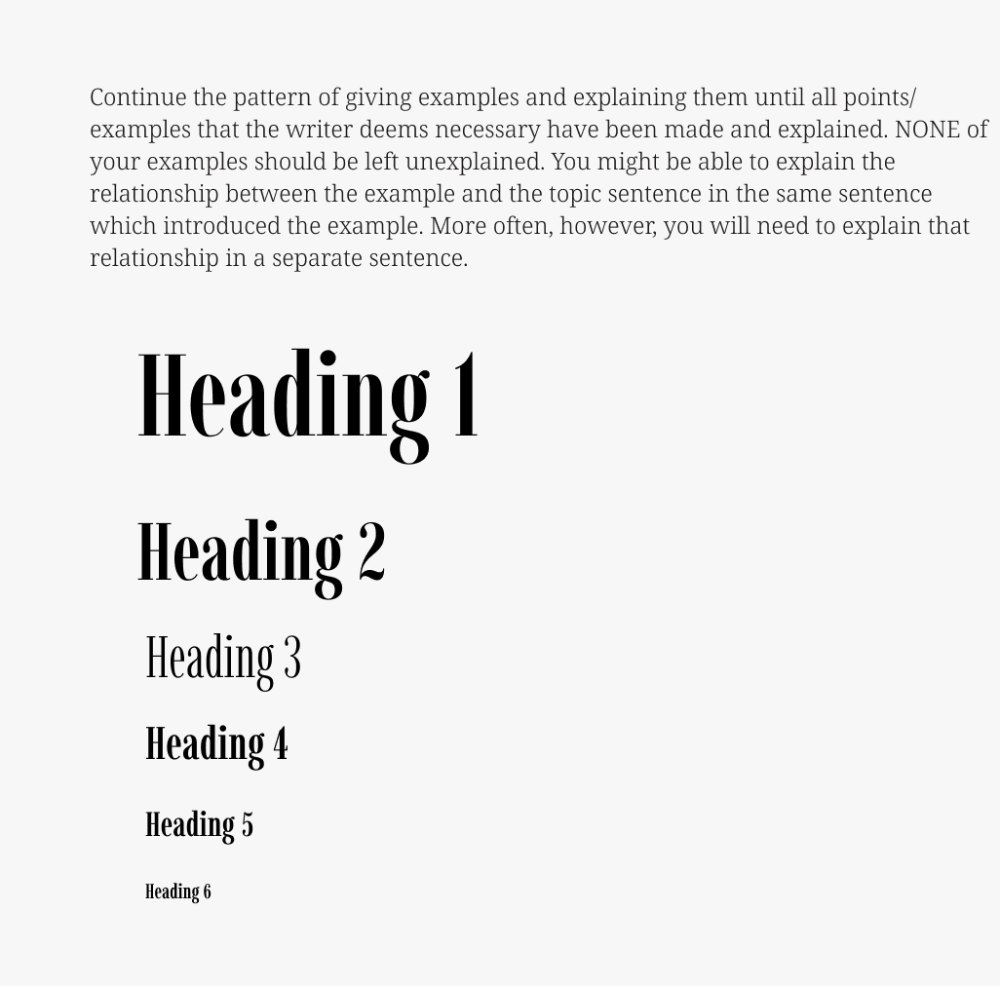

A greyscale wireframe set for an invented freelance designer's site — made in the earliest stretch of my design education, before I had learned a single visual trick to hide behind.
Because it had no colour, no imagery and no type personality, the only thing left to get right was structure. It is the project where I learned that layout carries the argument.
The page is sequenced as a pitch: who he is, who trusted him, proof of work, a client's word, then the ask. Every block answers the objection the previous block raises — so a visitor who stops halfway still leaves with the offer and a way to contact him.
Work sits in oversized overlapping frames rather than a card grid, so the eye travels diagonally instead of scanning a list.

Two pages that carry the load a homepage cannot: credibility, and removing every excuse not to write.


Decided before any screen was drawn, so the wireframes had rules to obey.


I keep this one in the portfolio deliberately. It is the floor I started from — and the reason the projects after it are structured before they are styled.